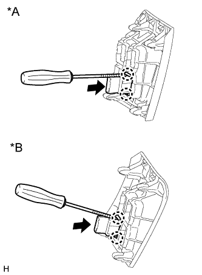

ВЫКЛЮЧАТЕЛЬ VSC OFF > СНЯТИЕ |
| 1. СНИМИТЕ НИЖНЮЮ ОТДЕЛОЧНУЮ НАКЛАДКУ ПАНЕЛИ ПРИБОРОВ В СБОРЕ |
 |
Освободите 4 фиксатора.
Отсоедините все разъемы и снимите отделочную накладку панели приборов.
| 2. СНИМИТЕ ВЫКЛЮЧАТЕЛЬ VSC OFF |
Отсоедините разъем выключателя VSC OFF.
|  |
С помощью отвертки освободите 2 захвата и снимите выключатель VSC OFF с нижней отделочной накладки панели приборов.
| *A | Для моделей с левосторонним рулевым управлением |
| *B | Для моделей с правосторонним рулевым управлением |